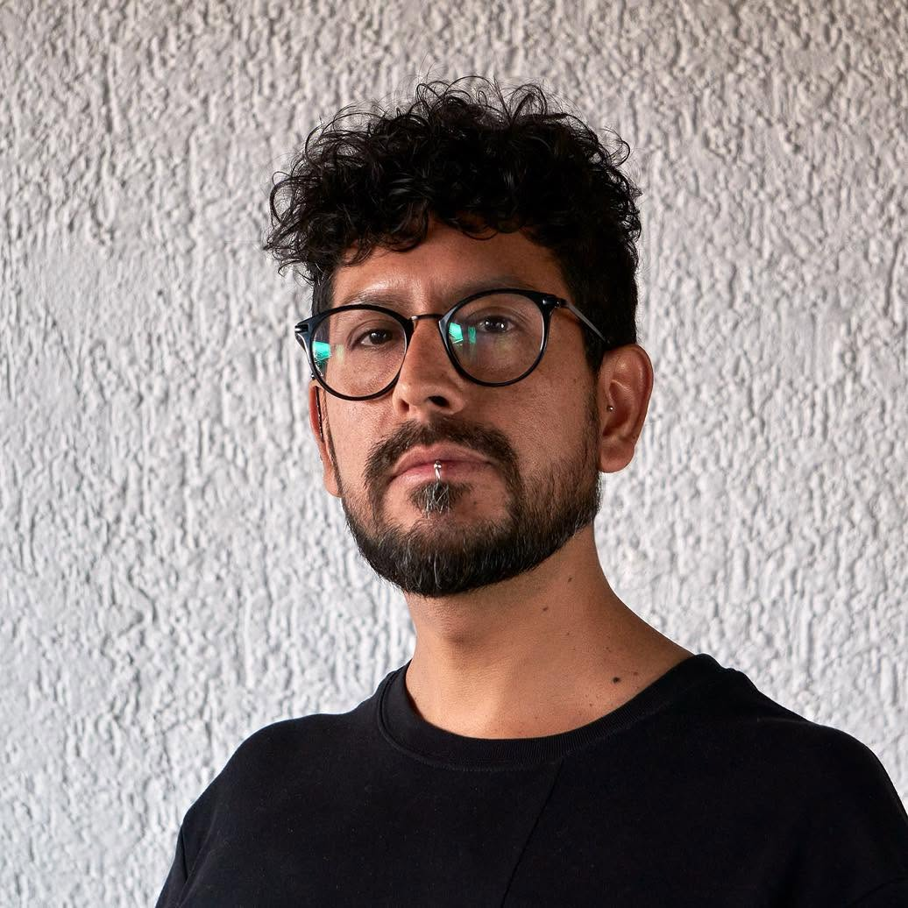

AI Video Direction
Dirección de video generativo con Kling 3.0, Veo 3.1, Luma Dream Machine y ComfyUI. Control de movimiento cinematográfico, consistencia de personajes y continuidad de escena.
Kling 3.0Veo 3.1LumaRunwaySora
Félix Gustavo Vergara Durán · Director Cinematográfico
Director audiovisual y tecnólogo creativo. Kling 3.0, Veo 3.1, ComfyUI, Motion Capture, más de 10 años dirigiendo la cámara y ahora extendiendo ese criterio a lo que la IA genera.
Construyamos algo que no se pueda ignorarServicios para productoras, agencias, artistas y marcas que quieren integrar IA en pipelines visuales serios.
Dirección de video generativo con Kling 3.0, Veo 3.1, Luma Dream Machine y ComfyUI. Control de movimiento cinematográfico, consistencia de personajes y continuidad de escena.
Flujos SDXL + Flux, ControlNet / OpenPose, Inpainting avanzado. Postproducción con After Effects, Premiere y Photoshop.
Construcción de herramientas a medida en Python para pipelines creativos: OpenPose, MediaPipe, estimación de pose, tracking de movimiento y automatización de flujos audiovisuales.
Visuales en tiempo real, video mapping con MadMapper, instalaciones interactivas y generación de señales para outputs físicos.
Más de 10 años dirigiendo lo que la cámara ve, ahora extendiendo ese ojo a lo que la IA genera.

Soy Félix Gustavo Vergara Durán, director audiovisual y tecnólogo creativo. Dirijo la intersección entre cinematografía tradicional, generación de video con IA y motion capture, donde Kling 3.0, Veo 3.1, ComfyUI, ControlNet, OpenPose y modelos de visión dejan de ser herramientas y se vuelven lenguaje.
Más de 10 años de experiencia en cine y televisión (HBO, Warner Bros) trabajando en series como Prófugos y films como Knock Knock de Eli Roth. Hoy aplico ese criterio cinematográfico a pipelines de IA: diseño de movimiento de cámara, consistencia de personajes, tracking de actuación sintética y postproducción profesional con After Effects y Premiere.
Mantengo AZUFR3, un proyecto de nuevos medios donde la IA generativa se cruza con identidad visual punk, urbana y digital. Piezas expuestas en el Museo Gabriela Mistral (Vicuña, Chile) y finalistas en festivales internacionales de cine con IA.
Proyectos expuestos, festivales y selecciones.
Instalación audiovisual generada con IA. Expuesta en el Museo Gabriela Mistral de Vicuña, Chile. Representación hiperrealista de la última visita de Gabriela Mistral, con coherencia facial, cinematografía y dirección de actuación sintética. Repercusión en medios culturales internacionales.
Cortometraje generado con IA. Finalista en el Festival Internacional de Cine con IA Project Odyssey (USA). Proyecto enfocado en narrativa cinematográfica hiperrealista, explorando dirección de luz, textura y actuación sintética bajo estándares broadcast.
Cortometraje generado con IA. Finalista en el Festival Internacional de Nuevos Medios Hub Musical (Valparaíso, Chile). Pieza desarrollada a partir de material de archivo del estallido social chileno (2019), reconfigurado mediante procesos generativos para construir una nueva narrativa visual.